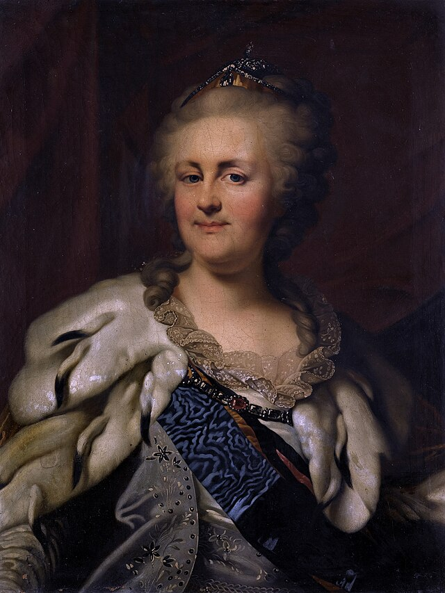

Первым известным упоминанием слова "борщ" считается глава в «Домострое» (известные списки относятся
к XVI веку), где автор советует «насеять борща и с весны варить его для себя почаще».
Раньше, чтобы борщ набрал вкус, в него добавляли закваски и продукты, полученные в результате
брожения. Поэтому понятия «борщ» и «брожение» изначально имеют общий смысл, а глагол «переборщить»
буквально означает «дать излишне перебродить» или «переквасить». Сейчас вместо заквасок в рецептах
борща используют подкислители: щавель, уксус, лимонный сок.
Поскольку свекла — привычная пищевая культура на территории Европы, то и супы с ней можно найти
в кухне разных народов. Так, у литовцев есть борщ под названием barščiai, у белорусов — боршч,
у поляков — barszcz, у румын — borş.
Борщ полезен для сердца и сосудов. В свёкле содержатся соли азотной кислоты, способствующие
расширению сосудов и снижению артериального давления. А в картофеле много калия, необходимого для
работы сердца, и при варке этот элемент переходит в бульон.
В США есть «борщевой пояс». Эта местность находится в окрестностях Нью-Йорка. Своим названием она
обязана евреям-ашкеназам — выходцам из России, Украины и Польши, которые поселились здесь и привезли
с собой рецепт этого блюда.
10 ноября в ряде стран отмечают праздник борща. Фестивали борща проводят в разных регионах России и Украины, но,
пожалуй, самый известный устраивают в сентябре в одном из райцентров Тернопольской области,
небольшом городке Борщеве. На мастер-классах опытные хозяйки делятся своими рецептами, а затем все
желающие могут попробовать борщ, сваренный на костре в большом котле.
Упоминание борща можно встретить в рассказах Чехова, повестях Гоголя,
«Отцах и детях» Тургенева, «Двенадцати стульях» Ильфа и Петрова.
Борщ покорил космос. Его отправляют на орбиту в специальных тубах из алюминия в качестве пищи
для космонавтов.
Известно, что любительницей борща была Екатерина II. История и бытописание ее жизни говорят, что
она так сильно любила это блюдо, что держала при дворе повара, который готовил только его.
